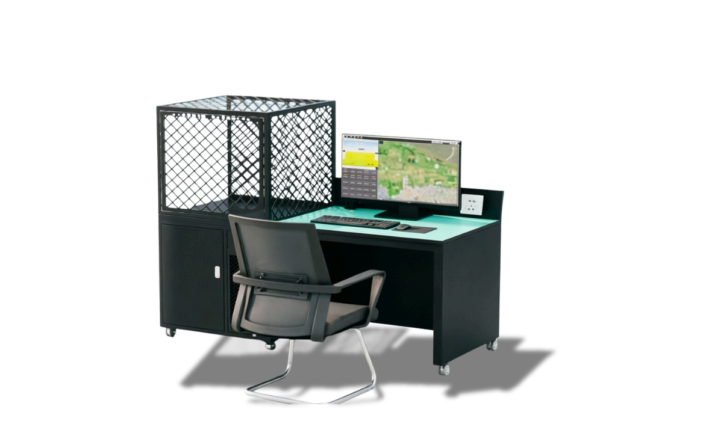

AeroBOT-Z1 无人机装调检修一体化实训操作平台
面向高校无人机专业，覆盖组装、参数调试、故障检修与飞行性能测试全流程的一体化实训平台。

产品概述
AeroBOT-Z1 专为高校无人机专业教学设计，旨在解决传统实训中设备分散、安全性低的问题。平台集成了防静电结构、智能终端与快拆接口，支持多旋翼无人机的全生命周期维护实训。
系统内置示波器、台式万用表、电子直流负载及可调电源等多功能仪表，学生可直接在平台上进行信号测量与传感器校准，无需额外搬运仪器，极大提升了实训效率。
核心功能
支持无人机装调：提供专用的组装与调试区域，配备防静电台面，确保精密电子元件在操作过程中的安全。
集成测试仪表：内置示波器、万用表、直流负载等，满足从基础电路到复杂飞控调试的测量需求。
智能终端交互：配备智能终端接口，可实时显示测试数据，支持数据记录与分析。
模块化扩展：平台设计灵活，方便扩展与其他机型连接，满足不同机型实训需求。
产品特点
高强度刚性结构：采用高强度材料结构成型，整体刚性强，有效抵御实训操作中的碰撞与磨损。
安全防静电设计：桌面搭载防静电木质台面，可快速释放静电电荷，保护精密电子元器件；配备地线接地保护设计。
高度集成化仪表：集成示波器、万用表、直流负载等功能，满足从基础电路到复杂飞控调试的需求。
灵活扩展性：方便扩展与其他机型连接，满足不同机型实训需求，支持全链路任务完成。
基本配置参数
产品尺寸：1680mm × 700mm × 1430mm
台面承重：≥ 150KG
Z轴升降范围：≥ 25cm
万向云台负载：可长时间负重 220KG
电源输入：AC 110-240V 50-60Hz
台面材质：防静电木质台面
结构材质：高强度材料结构成型
配装套件：智能终端、示波器、万用表等
教学价值
AeroBOT-Z1 可支撑无人机装调、电子电工基础、传感器应用、故障诊断与排除、飞控参数调试等课程内容。
学生可通过平台直观理解无人机各子系统的连接关系与工作原理，掌握标准化的装调流程与检修方法，为后续的行业应用打下坚实基础。
适用场景
适用于高校及职业院校无人机应用技术、无人机装调检修、航空电子电气技术等专业。
也可用于无人机装调检修实验室建设、职业技能鉴定、技能大赛训练及企业员工岗前培训。